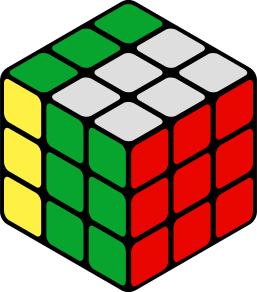
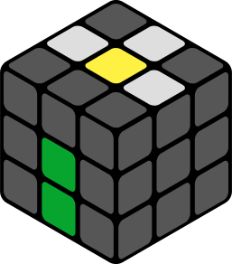
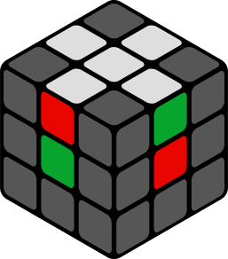
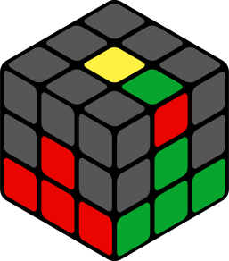
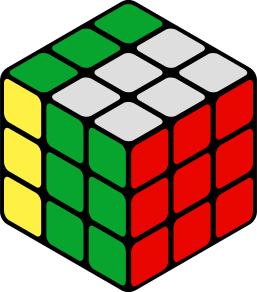
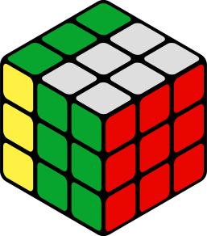

Каждый хотя бы раз в своей жизни пытался собрать кубик Рубика. Сделать это самостоятельно без инструкций очень сложная задача.
С помощью этой инструкции, разработанной специально для начинающих, вы легко соберете свой первый кубик.
Достаточно понять логику сборки, проявить настойчивость и запомнить несколько алгоритмов.
Длительность урока: 45 минут.
Этапы сборки
1. Правильный крест в первом слое
2. Углы первого слоя - первый слой собран
3. Рёбра среднего слоя - два слоя собраны
4. Крест в последнем слое
5. Правильный крест в последнем слое
6. Расстановка углов в последнем слое
7. Разворот углов последнего слоя - кубик собран
1. Правильный крест2. Углы первого слоя3. Рёбра среднего слоя4. Крест последнего слоя5. Правильный крест в последнем слое6. Расстановка углов последнего слоя7. Разворот углов третьего слоя.Все этапы сборки кубика Рубика
Подготовительный этап
Устройство кубика
Знакомство с устройством кубика Рубика 3х3. Чтобы успешно собрать свой Первый кубик Рубика, нам нужно знать, из чего кубик состоит, как вращается, и как называются его элементы.Из чего состоит кубик Рубика? Прежде чем начать собирать кубик, мы должны убедиться, что знаем, с каких деталей он состоит. Это поможет нам интуитивно понимать, каким образом могут перемещаться детали. В кубике Рубика 3х3 есть 3 вида деталей:ЦентрыРебраЦентры (6 шт.) Они никогда не меняют своего положения друг относительно друга и всегда остаются на своём месте. Т.е. в кубике всегда будет действовать закономерность: напротив белого центра будет желтый, напротив синего – зеленый, а напротив красного – оранжевый. Цвет центра соответственно и есть цветом собранной стороны (синий центр ➝ синяя сторона и т.д.).
Ребра (12 шт.) Ребра кубика имеют два цвета и формируют своеобразный "крест", когда находится на своих местах. Эти цвета между собой невозможно разъединить.УглыУглы (8 шт.) Угловые элементы состоят из 3 цветов. Эти цвета также нельзя разъединить между собой.
Грани кубика Рубика - 9 элементов, которые можно вращать одновременно
Собрать кубик нам помогут алгоритмы. Апостроф, или как его называют спидкуберы "штрих" обозначает, что движение должно исполняться против часовой стрелки. Чтобы не запутаться, представьте что вы смотрите на вращаемую сторону прямо перед собой.
Например:
— R (от англ. "right") это поворот правой грани по часовой стрелке.
— R' поворот правой грани против часовой стрелкиПравая грань (Right)
движение RПравая грань
движение R'

Левая грань (Left)
движение LЛевая грань (Left)
движение L'Движение UДвижение U'Движение DДвижение D'Движение FДвижение F'Движение BДвижение B'
Этап 1. Правильный крест
Сборка правильного креста мы делим на два шага первый шаг это "цветок", который потом и превращается в правильный крест на 2 шаге.1. Цветок2. Крест
Цветок
Наша цель – собрать цветок, в котором центр будет желтый, а лепестки – белыми (рис 1.). Кубик во время сборки держим желтым центром вверх.
Когда цветок будет готов, мы заменим желтый центр на белый, чтобы переделать его в правильный крест. (рис. 2)
Цветок
Для создания цветка нам нужно найти все 4 белых ребра и поднять их к желтому центру. Сделать это очень просто. Вы можете сделать это интуитивно и сразу перейти к следующему шагу. 1. Поднимаем RРезультат1. Если мы видим белый цвет на среднем слое, то просто поднимаем его движением R. Делаем так со всеми ребрами на среднем слое.2. Делаем U RРезультат2. В случае если на среднем слое есть ребро, но поставить его мешает другая деталь, – отодвигаем мешающую нам деталь движением U и ставим нужную на свое место движением R.3. Делаем R2Результат
Детали на среднем слое закончились. Переходим в нижний.
3. Если нужная нам деталь смотрит белым цветом вниз, то просто поднимаем ее двумя движениями R, что в формулах записывается R2.4. F U L'5. F U' R4. Если деталь находится на верхнем или нижнем слое и смотрит белым на вас (Рис 4 или 5), то сначала нужно переместить деталь на средний слой движением F, а после поставить деталь со среднего слоя на свое место (если оно занято другой деталью, отодвиньте ее движением U или U').
Результат
Поздравляем!
Если у Вас получилось собрать цветок, то следующие этапы сборки кубика не вызовут у вас никаких сложностей. Цветок самый тяжелый для понимания среди начинающих.
Крест
Очень просто и всего в несколько движений цветок можно превратить в правильный крест.F2РезультатСмотрим на цветок и обращаем внимание на цвет ребра. Выбираем любое из ребер, совмещаем его с центром такого же цвета и опускаем вниз (делаем движение F2).
Делаем так поочерёдно со всеми ребрами.Правильный крест
Неправильный крест
Когда ребра закончатся — переворачиваем весь кубик, и видим, что белый правильный крест собран.
Обратите внимание, цвет ребер в кресте должен совпадать с цветами центров. Если у вас вдруг получился неправильный крест, попробуйте еще раз!
Этап 2. Первый слой
Без угловС углами
Углы
1. Дальше мы будем собирать уголки, (3 цвета на элементе), в итоге должен получиться целый первый слой.
Но для начала мы выучим очень простую, но эффективную формулу, которая называется пиф-паф. Состоит из 4 движений R U R' U', а простыми словами: вверх-влево-вниз-вправо.
Рис.1Рис.2Перемещаем наш собранный правильный крест вниз (Рис.1) . Ищем уголок на верхнем слое, с белым цветом. (Рис.2)R U R' U'РезультатЕсли, например, угол зелено-красный, то ставить его нужно между зеленым и красным центром и выполняем пиф-паф R U R' U', а простыми словами: вверх-влево-вниз-вправо(R U R' U')3РезультатВ зависимости от ситуации пиф-паф приходиться выполнять от 1 до до 5 раз , если например уголок смотрит белым вверх то 3 раза R U R' U'(R U R' U')2РезультатЕсли вы заметили что уголок стоит на своем месте, но его так же нужно развернуть мы используем пиф-паф. Крутите до тех пор, пока уголок не станет правильно.R U R' U'РезультатНо, если вам вдруг не повезло и уголки с белым цветом закончились на верхнем слое, нужно одним пиф-пафом R U R' U' выбить уголок который стоит в неправильном месте и дальше уже расставлять обычным образом.
Поздравляем, первый слой собран!
Этап 3. Средний слой
Один слойДва слоя
Средний или второй слой
Что бы собрать второй слой нужно по очереди ставить ребра из верхнего слоя в средний. Для этого нам нужно выучить пиф-паф левой рукой L' U' L U или другими словами левой рукой мы делаем вверх-вправо-вниз-влево Рис.1Рис.2
Ребро идет вправо
Обращаем особое внимание на цвета. Для примера возьмем зелено-красное ребро. Подводим его и ставим красным цветом к красному центру и держим кубик красным цветом к себе (Рис.1).
Делаем U R U R' U'➪L' U' L U
➪ значит перехват кубика вправо. В нашем случае зеленый центр станет перед нами.
Словами формула будет звучать так: правый пиф-паф,перехват вправо, левый пиф-паф
Рис.3Рис.4
Ребро идет влево
Если вы подставили зелено-красное ребро к зеленому центру (Рис.3) то можем заметить что ребро в этот раз идет влево. Значит мы будем делать U' L' U' L U⇦ R U R' U'
⇦ значит перехват кубика влево. В нашем случае красный центр станет перед нами.
Словами формула будет звучать так: левый пиф-паф, перехват влево, правый пиф-паф.
Рис.1Рис.2
Ребра закончились
Если вам не повезло и на верхнем слое закончились нужные ребра, а второй слой не собран - не проблема! Ставим неправильно собранное ребро справа (Рис.1) и делаем R U R' U'➪L' U' L U
Cловами звучит так: правый пиф-паф, перехват вправо (зеленый центр перед вами) левый пиф-паф и дальше обычно расставляем ребра.
Позравляем, после расстановки всех ребер во втором слое кубик собран на 60 процентов. До данного этапа доходит меньше половины, поэтому если вы справились, то вы молодец и скоро ваш кубик Рубика будет собран.
Этап 4. Сборка последнего слоя кубика Рубика
ТочкаПол креста (девять часов)
Желтый крест
Мы уже почти собрали кубик. Осталось совсем немножко. На этом этапе мы снова переворачиваем кубик желтым цветом вверх.
Последовательность создания желтого креста такая:
точка → пол креста (девять часов) → палка → крест
У Вас на кубике уже может быть собран целый крест. Но не всегда так везет. Иногда все-таки получается одна грустная точка, которую нужно превратить постепенно в крест. ПалкаКрестКакая бы фигура у вас не была – делаем F R U R' U' F'.
Прощеговоря F (пиф-паф) F'.
Обратите внимание, что если у вас "пол креста", то держать его нужно на 9 часов, что бы одна стрелка смотрела влево, а вторая— вверх. А если палка, то держите ее горизонтально и лишь потом делайте алгоритм.
Если изначально у Вас была точка, то она превратиться в пол креста, если было пол креста, то они превратятся в палку, а если палка, – то в крест.
Внимание!
Если у Вас одновременно вверх смотрит 1 или 3 элемента и Вы не видите ни одной из приведенных фигур, Ваш кубик могли разбирать на детали и неправильно собрать (нечаянно или с целью подшутить). В таком случае вы не соберете куб по формулам. Настоятельно рекомендуем - разберите куб на части и соберите его по цветам механическим способом.
Этап 5. Правильный желтый крест
Рис.1Рис.2Крест, который получился, может быть неправильным (Рис.1). Нам нужно сделать так, что б все цвета на ребрах крестика (3 слоя) совпадали с центрами (Рис.2).
Внимание, у нас может быть только три ситуации:
1. ребра совпадают рядом
2. ребра совпадают напротив
3. вам повезло, и крестик сразу правильный или нужно только довернуть верхний слой.
РядомРезультат1. ребра совпадают рядом
Если эти два ребра соседние — ставим их справа и сзади, и делаем формулу R U R' U R U2 R' U и у вас должен получится правильный крест (цвет ребер креста, совпадает с центрами.
НапротивРядом2. ребра совпадают напротив
Если эти два ребра совпадают напротив — ставим их перед нами и сзади, и делаем формулу R U R' U R U2 R' и у вас должен получится предыдущая ситуация (Рядом).
Эпап 6. Расстановка углов третьего слоя
Ноль углов на местеОдин угол на своем местеСначала нужно проверить, сколько углов стоят на своем месте. Это либо все, 1 угол либо же ни одного. Если на месте все углы – пропускаем этот этап и переходим к следующему.
Углы могут смотреть желтым цветом в любую сторону. Главное, что бы оранжево-зеленый угол стоял между оранжевым и зеленым центром, зелено-красный угол стоял между зеленым и красным и т.д.
Если таких углов нет, то делаем алгоритм:
R U' L' U R' U' L U
После исполнения алгоритма должен появиться 1 правильный угол. Ставим его слева и сверху (там где большой палец левой руки) и делаем тот же алгоритм. Если ничего не получилось, опять ставим в нижнюю левую точку и повторяем.
Внимание!
Если у Вас на своем месте стоит только 2 или 3 элемента, Ваш кубик разбирали на детали и неправильно собрали. Из такого состояния кубик не соберете по формулам. Разберите куб на части и соберите его по цветам механическим способом.
Когда все углы будут стоять на своем месте – остается всего лишь развернуть их, что бы полностью собрать кубик.Рис.1Рис.2
Последний шаг. Разворот углов
Разворачивать углы мы будем пиф-пафом. Это простая формула, которую вы уже очень хорошо знаете! R U R' U'
Проверьте еще разок, все ли углы стоят на своих местах (Рис.1). Перехватите кубик так, что б уголки которые нужно собрать были снизу (Рис.2).
Рис.1Рис.2Начинаем с любого несобранного угла и делаем пиф-пафы до тех пор, пока угол не будет собран. (Рис.1)
Затем крутим нижний слой,и подставляем следующий не развернутый уголок (Рис.2). Продолжаем делать пиф-пафы, пока не соберется 2-ой угол (Рис.3) и так далее. (ВНИМАНИЕ! Если угол уже собрался, пиф-паф все равно нужно доделать до конца, и только потом приступать к следующему).
Когда вы развернете все уголки, кубик будет собран, не забудьте довернуть последнее движение.
Предупреждение
Здесь легче всего где-нибудь оступиться. По-этому внимательно, иначе кубик придется собирать заново.Рис.3Результат
Поздравляем!
Вы молодец. У вас получилось собрать свой первый кубик Рубика.
Расскажите об это своим друзьям.
Оставьте комментарий за сколько вы справились со своим первым кубиком.


 
